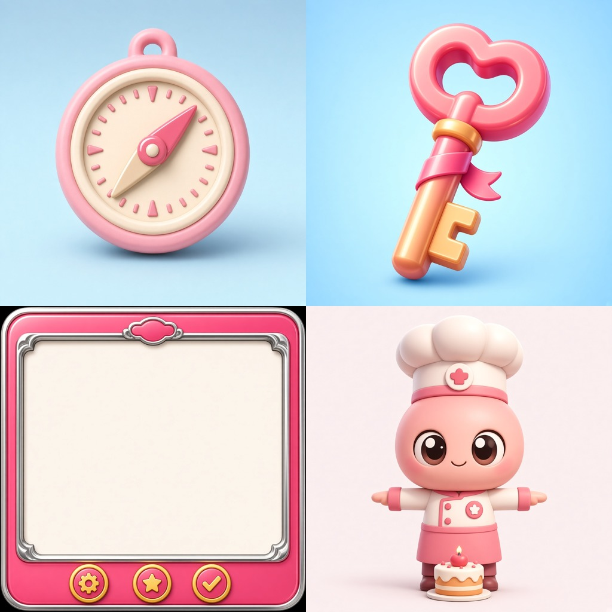
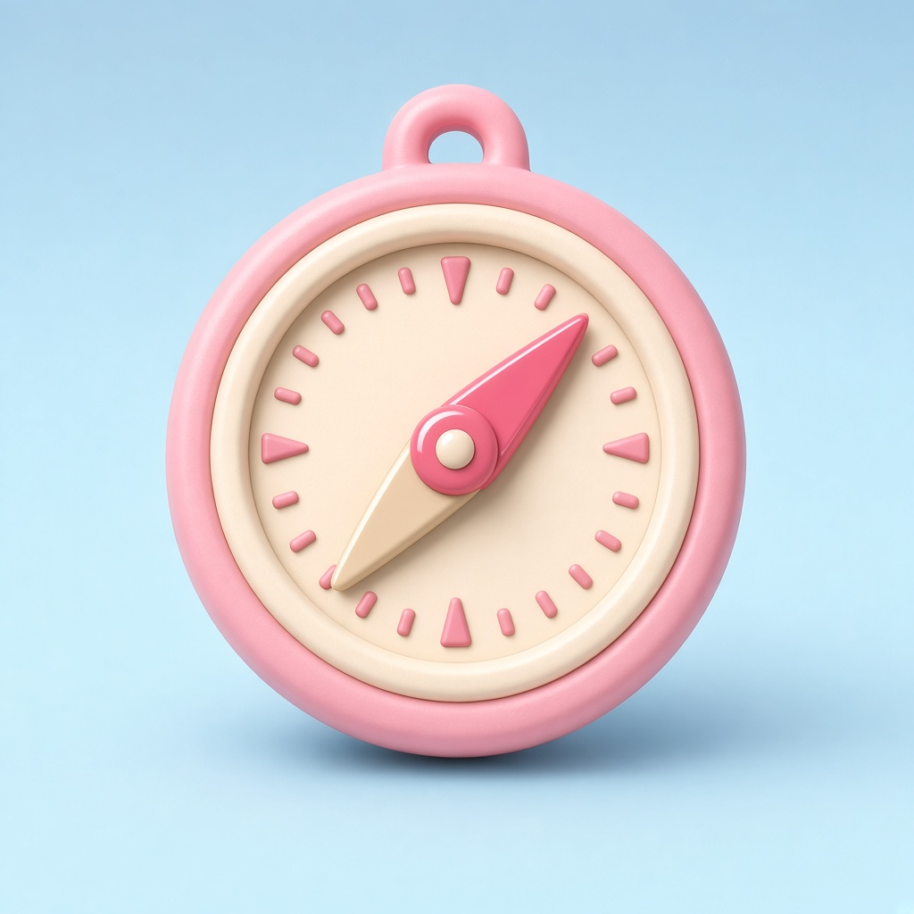
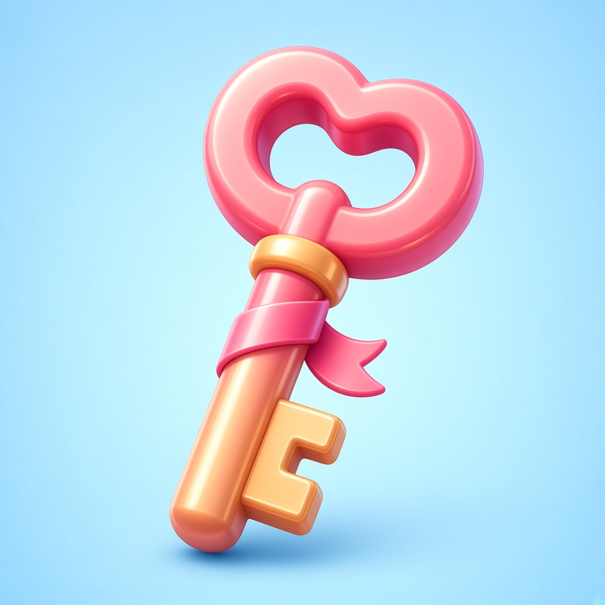
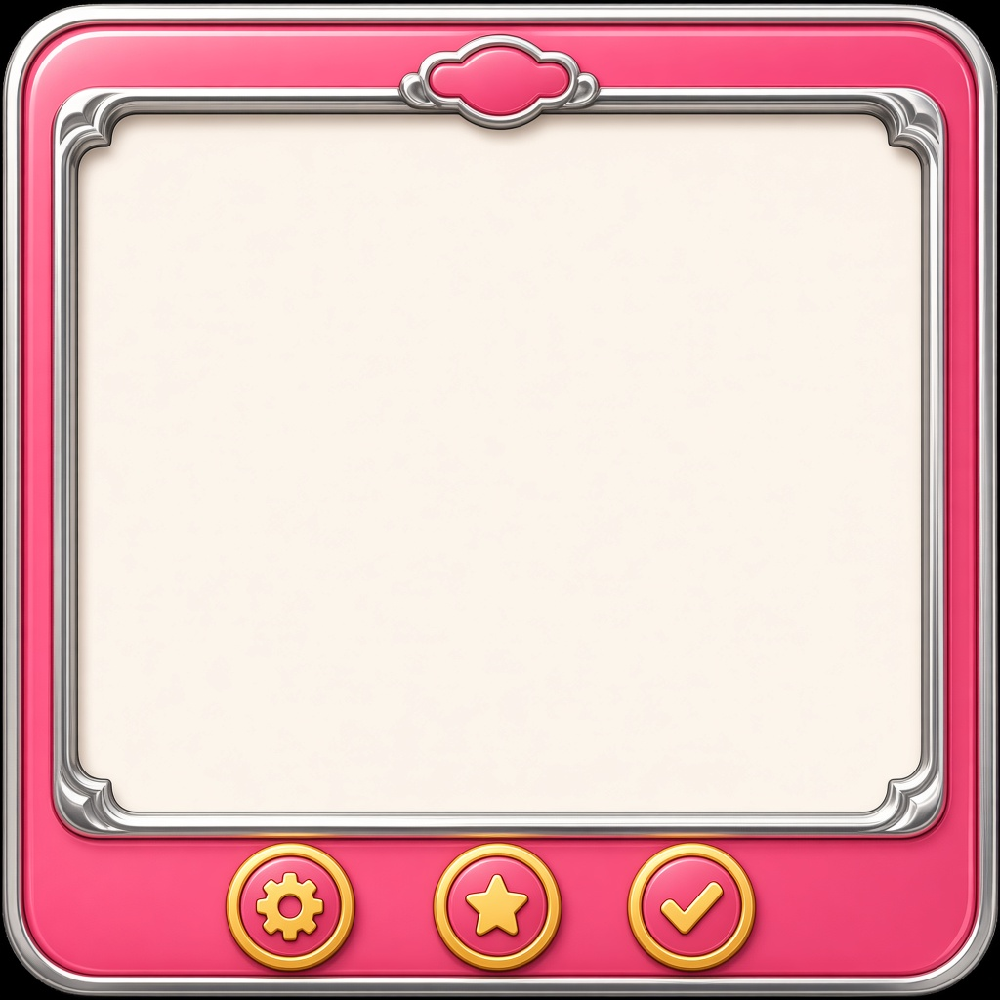
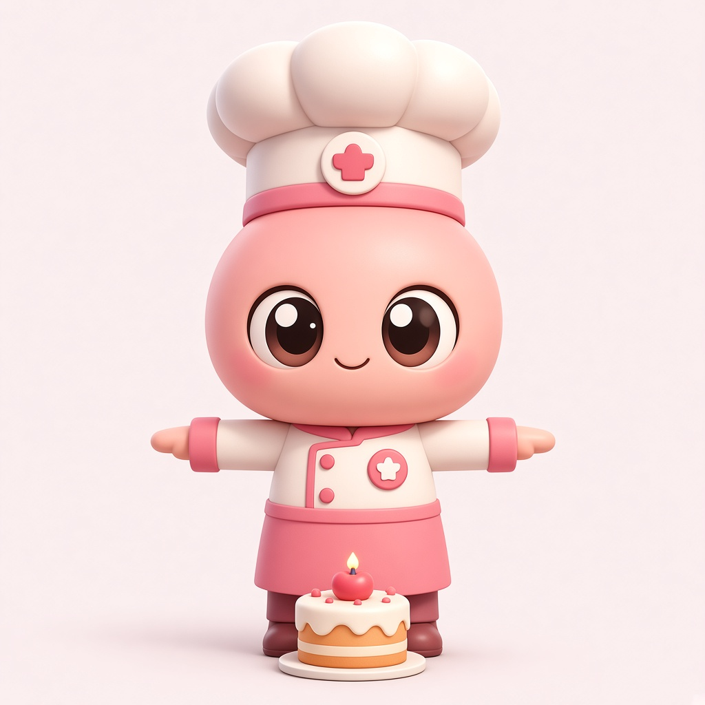

策略修复后重跑：clone-fix1027-*（2026-10-27 17:44）· search → start → generate/judge → finish。UI 注入 ui_shell 结构底线 + 回声一票否决；warm-start 过滤旧「奖励弹窗」recipe。
| 模式 | 参考 | 锁什么 | 本页样例 |
|---|---|---|---|
| Mode A 零参考 | 无 reference_image_paths |
自写 bible 的 medium / 光感 / 色板；brief 必须写明 medium | Icon · 冒险指南针 |
| Mode B 有参考 | 每轮垫风格参考（本组：val_heart_ref.png） |
~95%：medium + 色板 + 光感；按类加 Icon 框/UI chrome/角色眼语法 | 钥匙 · 弹窗 · 甜品师（题材全新） |
左上 Mode A；其余三格 Mode B 同一张心形礼盒垫图，三类新题材。

模块 icon.Compass · bible：cute cartoon toy icon · pastel · 左上软光 · NO catalog lighting

模块 icon.KeyClone · 锁亮粉桃黄光洁圆润 · 不抄礼盒外形

模块 ui.PopupClone · 锁 medium + 双层 chrome · 内容区空白可 9-slice 拉伸 · 禁止礼盒/道具进中心 · 底栏符号钮 · 禁可读字（工程透明 PNG 另导出）

模块 character.PastryChef · 虹膜眼 · 换装自由 · 禁 turnaround

完整评分履历见仓库内：
.memory-art/converge/clone-fix1027-a-icon_report.md.memory-art/converge/clone-fix1027-b-key_report.md.memory-art/converge/clone-fix1027-b-ui_report.md.memory-art/converge/clone-fix1027-b-char_report.mdclone-rerun-* 报告仍保留作对照